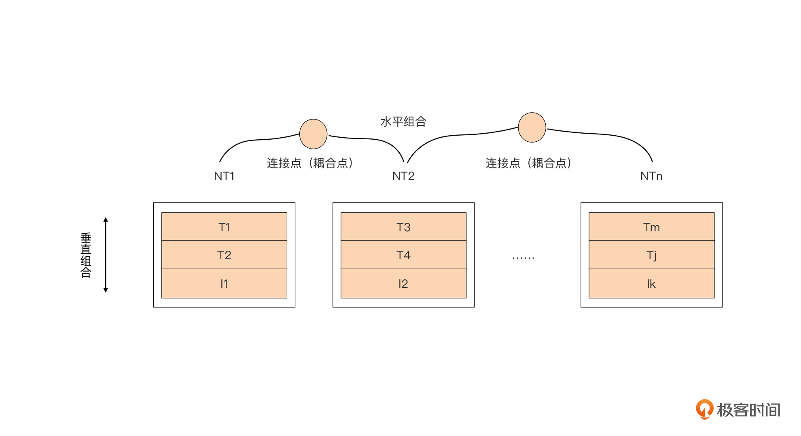
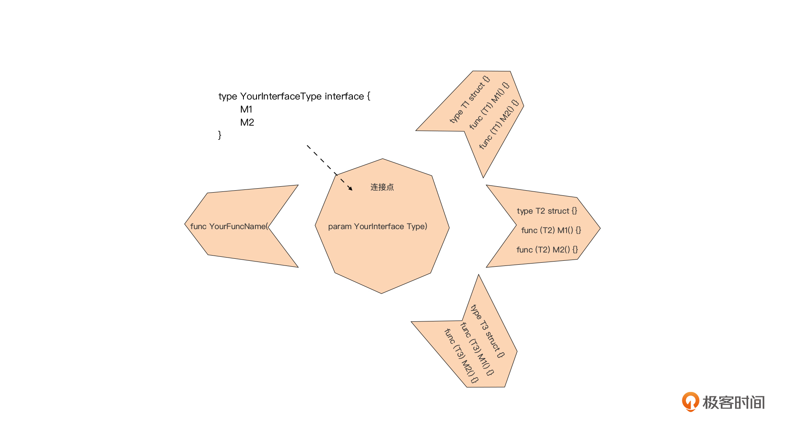

- 00 开篇词 这样入门Go，才能少走弯路.md.html
- 01 前世今生：你不得不了解的Go的历史和现状.md.html
- 02 拒绝“Hello and Bye”：Go语言的设计哲学是怎么一回事？.md.html
- 03 配好环境：选择一种最适合你的Go安装方法.md.html
- 04 初窥门径：一个Go程序的结构是怎样的？.md.html
- 05 标准先行：Go项目的布局标准是什么？.md.html
- 06 构建模式：Go是怎么解决包依赖管理问题的？.md.html
- 07 构建模式：Go Module的6类常规操作.md.html
- 08 入口函数与包初始化：搞清Go程序的执行次序.md.html
- 09 即学即练：构建一个Web服务就是这么简单.md.html
- 10 变量声明：静态语言有别于动态语言的重要特征.md.html
- 11 代码块与作用域：如何保证变量不会被遮蔽？.md.html
- 12 基本数据类型：Go原生支持的数值类型有哪些？.md.html
- 13 基本数据类型：为什么Go要原生支持字符串类型？.md.html
- 14 常量：Go在“常量”设计上的创新有哪些？.md.html
- 15 同构复合类型：从定长数组到变长切片.md.html
- 16 复合数据类型：原生map类型的实现机制是怎样的？.md.html
- 17 复合数据类型：用结构体建立对真实世界的抽象.md.html
- 18 控制结构：if的“快乐路径”原则.md.html
- 19 控制结构：Go的for循环，仅此一种.md.html
- 20 控制结构：Go中的switch语句有哪些变化？.md.html
- 21 函数：请叫我“一等公民”.md.html
- 22 函数：怎么结合多返回值进行错误处理？.md.html
- 23 函数：怎么让函数更简洁健壮？.md.html
- 24 方法：理解“方法”的本质.md.html
- 25 方法：方法集合与如何选择receiver类型？.md.html
- 26 方法：如何用类型嵌入模拟实现“继承”？.md.html
- 27 即学即练：跟踪函数调用链，理解代码更直观.md.html
- 28 接口：接口即契约.md.html
- 29 接口：为什么nil接口不等于nil？.md.html
- 30 接口：Go中最强大的魔法.md.html
- 31 并发：Go的并发方案实现方案是怎样的？.md.html
- 32 并发：聊聊Goroutine调度器的原理.md.html
- 33 并发：小channel中蕴含大智慧.md.html
- 34 并发：如何使用共享变量？.md.html
- 35 即学即练：如何实现一个轻量级线程池？.md.html
- 36 打稳根基：怎么实现一个TCP服务器？（上）.md.html
- 37 代码操练：怎么实现一个TCP服务器？（中）.md.html
- 38 成果优化：怎么实现一个TCP服务器？（下）.md.html
- 39 驯服泛型：了解类型参数.md.html
- 40 驯服泛型：定义泛型约束.md.html
- 41 驯服泛型：明确使用时机.md.html
- 元旦快乐 这是一份暂时停更的声明.md.html
- 加餐 作为Go Module的作者，你应该知道的几件事.md.html
- 加餐 如何拉取私有的Go Module？.md.html
- 加餐 我“私藏”的那些优质且权威的Go语言学习资料.md.html
- 加餐 聊聊Go 1.17版本的那些新特性.md.html
- 加餐 聊聊Go语言的指针.md.html
- 加餐 聊聊最近大热的Go泛型.md.html
- 大咖助阵 叶剑峰：Go语言中常用的那些代码优化点.md.html
- 大咖助阵 大明：Go泛型，泛了，但没有完全泛.md.html
- 大咖助阵 孔令飞：从小白到“老鸟”，我的Go语言进阶之路.md.html
- 大咖助阵 徐祥曦：从销售到分布式存储工程师，我与 Go 的故事.md.html
- 大咖助阵 曹春晖：聊聊 Go 语言的 GC 实现.md.html
- 大咖助阵 海纳：聊聊语言中的类型系统与泛型.md.html
- 期中测试 一起检验下你的学习成果吧.md.html
- 用户故事 罗杰：我的Go语言学习之路.md.html
- 结束语 和你一起迎接Go的黄金十年.md.html
- 结课测试 快来检验下你的学习成果吧！.md.html
- 捐赠
30 接口：Go中最强大的魔法
你好，我是Tony Bai。
在前面的两讲中，我们学习了接口的基础知识、接口类型定义的惯例以及接口在运行时的表示。掌握了这些内容后，可以说，在语法层面的有关接口的问题，对我们来说都不是什么阻碍了。在弄清楚接口是什么这个问题之后，摆在我们面前的就是怎么用接口的问题了。
不过，这里的“怎么用”，可不是要告诉你怎么使用Go标准库中的接口或第三方包中定义好的接口，而是让你学习如何利用接口进行应用的设计，以及改善已有应用的设计，换句话说就是Go接口的应用模式或惯例。
不过在讲解接口应用模式之前，我们还先要了解一个前置原则，那就是在实际真正需要的时候才对程序进行抽象。再通俗一些来讲，就是不要为了抽象而抽象。上一讲中我们说过，接口本质上是一种抽象，它的功能是解耦，所以这条原则也在告诉我们：不要为了使用接口而使用接口。举一个简单的例子，如果我们要给一个计算器添加一个整数加法的功能特性，本来一个函数就可以实现：
func Add(a int64, b int64) int64 {
return a+b
}
但如果你非要引入一个接口，结果代码可能就变成了这样：
type Adder interface {
Add(int64, int64) int64
}
func Add(adder Adder, a int64, b int64) int64 {
return adder.Add(a, b)
}
这就会产生一种“过设计”的味道了。
要注意，接口的确可以实现解耦，但它也会引入“抽象”的副作用，或者说接口这种抽象也不是免费的，是有成本的，除了会造成运行效率的下降之外，也会影响代码的可读性。不过这里你就不要拿我之前讲解中的实战例子去对号入座了，那些例子更多是为了让你学习Go语法的便利而构建的。
在多数情况下，在真实的生产项目中，接口都能给应用设计带来好处。那么如果要用接口，我们应该怎么用呢？怎么借助接口来改善程序的设计，让系统实现我们常说的高内聚和低耦合呢？这就要从Go语言的“组合”的设计哲学说起。
一切皆组合
Go语言之父Rob Pike曾说过：如果C++和Java是关于类型层次结构和类型分类的语言，那么Go则是关于组合的语言。如果把Go应用程序比作是一台机器的话，那么组合关注的就是如何将散落在各个包中的“零件”关联并组装到一起。我们前面也说过，组合是Go语言的重要设计哲学之一，而正交性则为组合哲学的落地提供了更为方便的条件。
正交（Orthogonality）是从几何学中借用的术语，说的是如果两条线以直角相交，那么这两条线就是正交的，比如我们在代数课程中经常用到的坐标轴就是这样。用向量术语说，这两条直线互不依赖，沿着某一条直线移动，你投影到另一条直线上的位置不变。
在计算机技术中，正交性用于表示某种不相依赖性或是解耦性。如果两个或更多事物中的一个发生变化，不会影响其他事物，那么这些事物就是正交的。比如，在设计良好的系统中，数据库代码与用户界面是正交的：你可以改动界面，而不影响数据库；更换数据库，而不用改动界面。
编程语言的语法元素间和语言特性也存在着正交的情况，并且通过将这些正交的特性组合起来，我们可以实现更为高级的特性。在语言设计层面，Go语言就为广大Gopher提供了诸多正交的语法元素供后续组合使用，包括：
- Go语言无类型体系（Type Hierarchy），没有父子类的概念，类型定义是正交独立的；
- 方法和类型是正交的，每种类型都可以拥有自己的方法集合，方法本质上只是一个将receiver参数作为第一个参数的函数而已；
- 接口与它的实现者之间无“显式关联”，也就说接口与Go语言其他部分也是正交的。
在这些正交语法元素当中，接口作为Go语言提供的具有天然正交性的语法元素，在Go程序的静态结构搭建与耦合设计中扮演着至关重要的角色。 而要想知道接口究竟扮演什么角色，我们就先要了解组合的方式。
构建Go应用程序的静态骨架结构有两种主要的组合方式，如下图所示：

我们看到，这两种组合方式分别为垂直组合和水平组合，那这两种组合的各自含义与应用范围是什么呢？下面我们分别详细说说。
垂直组合
垂直组合更多用在将多个类型（如上图中的T1、I1等）通过“类型嵌入（Type Embedding）”的方式实现新类型（如NT1）的定义。
传统面向对象编程语言（比如：C++）大多是通过继承的方式建构出自己的类型体系的，但Go语言并没有类型体系的概念。Go语言通过类型的组合而不是继承让单一类型承载更多的功能。由于这种方式与硬件配置升级的垂直扩展很类似，所以这里我们叫它垂直组合。
又因为不是继承，那么通过垂直组合定义的新类型与被嵌入的类型之间就没有所谓“父子关系”的概念了，也没有向上、向下转型（Type Casting），被嵌入的类型也不知道将其嵌入的外部类型的存在。调用方法时，方法的匹配取决于方法名字，而不是类型。
这样的垂直组合更多应用在新类型的定义方面。通过这种垂直组合，我们可以达到方法实现的复用、接口定义重用等目的。
前面说了，在实现层面，Go语言通过类型嵌入（Type Embedding）实现垂直组合，组合方式主要有以下这么几种。因为我们在26讲已经对类型嵌入进行了详细讲解，我这里只简单带你回顾一下。
第一种：通过嵌入接口构建接口
通过在接口定义中嵌入其他接口类型，实现接口行为聚合，组成大接口。这种方式在标准库中非常常见，也是Go接口类型定义的惯例，我们在前面的讲解中也不止一次提及。
比如这个ReadWriter接口类型就采用了这种类型嵌入方式：
// $GOROOT/src/io/io.go
type ReadWriter interface {
Reader
Writer
}
第二种：通过嵌入接口构建结构体类型
这里我们直接来看一个通过嵌入接口类型创建新结构体类型的例子：
type MyReader struct {
io.Reader // underlying reader
N int64 // max bytes remaining
}
在前面的讲解中，我们也曾提到过，在结构体中嵌入接口，可以用于快速构建满足某一个接口的结构体类型，来满足某单元测试的需要，之后我们只需要实现少数需要的接口方法就可以了。尤其是将这样的结构体类型变量传递赋值给大接口的时候，就更能体现嵌入接口类型的优势了。
第三种：通过嵌入结构体类型构建新结构体类型
在结构体中嵌入接口类型名和在结构体中嵌入其他结构体，都是“委派模式（delegate）”的一种应用。对新结构体类型的方法调用，可能会被“委派”给该结构体内部嵌入的结构体的实例，通过这种方式构建的新结构体类型就“继承”了被嵌入的结构体的方法的实现。
现在我们可以知道，包括嵌入接口类型在内的各种垂直组合更多用于类型定义层面，本质上它是一种类型组合，也是一种类型之间的耦合方式。
说完了垂直组合，我们再来看看水平组合。
水平组合
当我们通过垂直组合将一个个类型建立完毕后，就好比我们已经建立了整个应用程序骨架中的“器官”，比如手、手臂等，那么这些“器官”之间又是通过什么连接在一起的呢？
关节!
没错！那么在Go应用静态骨架中，什么元素经常扮演着“关节”的角色呢？我们通过一个例子来看一下。
假设现在我们有一个任务，要编写一个函数，实现将一段数据写入磁盘的功能。通常我们都可以很容易地写出下面的函数：
func Save(f *os.File, data []byte) error
我们看到，这个函数使用一个*os.File来表示数据写入的目的地，这个函数实现后可以工作得很好。但这里依旧存在一些问题，我们来看一下。
首先，这个函数很难测试。os.File是一个封装了磁盘文件描述符（又称句柄）的结构体，只有通过打开或创建真实磁盘文件才能获得这个结构体的实例，这就意味着，如果我们要对Save这个函数进行单元测试，就必须使用真实的磁盘文件。测试过程中，通过Save函数写入文件后，我们还需要再次操作文件、读取刚刚写入的内容来判断写入内容是否正确，并且每次测试结束前都要对创建的临时文件进行清理，避免给后续的测试带去影响。
其次，Save函数违背了接口分离原则。根据业界广泛推崇的Robert Martin（Bob大叔）的接口分离原则（ISP原则，Interface Segregation Principle），也就是客户端不应该被迫依赖他们不使用的方法，我们会发现os.File不仅包含Save函数需要的与写数据相关的Write方法，还包含了其他与保存数据到文件操作不相关的方法。比如，你也可以看下*os.File包含的这些方法：
func (f *File) Chdir() error
func (f *File) Chmod(mode FileMode) error
func (f *File) Chown(uid, gid int) error
... ...
这种让Save函数被迫依赖它所不使用的方法的设计违反了ISP原则。
最后，Save函数对os.File的强依赖让它失去了扩展性。像Save这样的功能函数，它日后很大可能会增加向网络存储写入数据的功能需求。但如果到那时我们再来改变Save函数的函数签名（参数列表+返回值）的话，将影响到Save函数的所有调用者。
综合考虑这几种原因，我们发现Save函数所在的“器官”与os.File所在的“器官”之间采用了一种硬连接的方式，而以os.File这样的结构体作为“关节”让它连接的两个“器官”丧失了相互运动的自由度，让它与它连接的两个“器官”构成的联结体变得“僵直”。
那么，我们应该如何更换“关节”来改善Save的设计呢？我们来试试接口。新版的Save函数原型如下：
func Save(w io.Writer, data []byte) error
你可以看到，我们用io.Writer接口类型替换掉了*os.File。这样一来，新版Save的设计就符合了接口分离原则，因为io.Writer仅包含一个Write方法，而且这个方法恰恰是Save唯一需要的方法。
另外，这里我们以io.Writer接口类型表示数据写入的目的地，既可以支持向磁盘写入，也可以支持向网络存储写入，并支持任何实现了Write方法的写入行为，这让Save函数的扩展性得到了质的提升。
还有一点，也是之前我们一直强调的，接口本质是契约，具有天然的降低耦合的作用。基于这点，我们对Save函数的测试也将变得十分容易，比如下面示例代码：
func TestSave(t *testing.T) {
b := make([]byte, 0, 128)
buf := bytes.NewBuffer(b)
data := []byte("hello, golang")
err := Save(buf, data)
if err != nil {
t.Errorf("want nil, actual %s", err.Error())
}
saved := buf.Bytes()
if !reflect.DeepEqual(saved, data) {
t.Errorf("want %s, actual %s", string(data), string(saved))
}
}
在这段代码中，我们通过bytes.NewBuffer创建了一个*bytes.Buffer类型变量buf，由于bytes.Buffer实现了Write方法，进而实现了io.Writer接口，我们可以合法地将变量buf传递给Save函数。之后我们可以从buf中取出Save函数写入的数据内容与预期的数据做比对，就可以达到对Save函数进行单元测试的目的了。在整个测试过程中，我们不需要创建任何磁盘文件或建立任何网络连接。
看到这里，你应该感受到了，用接口作为“关节（连接点）”的好处很多！像上面图中展示的那样，接口可以将各个类型水平组合（连接）在一起。通过接口的编织，整个应用程序不再是一个个孤立的“器官”，而是一幅完整的、有灵活性和扩展性的静态骨架结构。
现在，我们已经确定了接口承担了应用骨架的“关节”角色，那么接下来我们就来看看接口是如何演好这一角色的。
接口应用的几种模式
前面已经说了，以接口为“关节”的水平组合方式，可以将各个垂直组合出的类型“耦合”在一起，从而编织出程序静态骨架。而通过接口进行水平组合的基本模式就是：使用接受接口类型参数的函数或方法。在这个基本模式基础上，还有其他几种“衍生品”。我们先从基本模式说起，再往外延伸。
基本模式
接受接口类型参数的函数或方法是水平组合的基本语法，形式是这样的：
func YourFuncName(param YourInterfaceType)
我们套用骨架关节的概念，用这幅图来表示上面基本模式语法的运用方法：

我们看到，函数/方法参数中的接口类型作为“关节（连接点）”，支持将位于多个包中的多个类型与YourFuncName函数连接到一起，共同实现某一新特性。
同时，接口类型和它的实现者之间隐式的关系却在不经意间满足了：依赖抽象（DIP）、里氏替换原则（LSP）、接口隔离（ISP）等代码设计原则，这在其他语言中是需要很“刻意”地设计谋划的，但对Go接口来看，这一切却是自然而然的。
这一水平组合的基本模式在Go标准库、Go社区第三方包中有着广泛应用，其他几种模式也是从这个模式衍生的。下面我们逐一看一下各个衍生模式。
创建模式
Go社区流传一个经验法则：“接受接口，返回结构体（Accept interfaces, return structs）”，这其实就是一种把接口作为“关节”的应用模式。我这里把它叫做创建模式，是因为这个经验法则多用于创建某一结构体类型的实例。
下面是Go标准库中，运用创建模式创建结构体实例的代码摘录：
// $GOROOT/src/sync/cond.go
type Cond struct {
... ...
L Locker
}
func NewCond(l Locker) *Cond {
return &Cond{L: l}
}
// $GOROOT/src/log/log.go
type Logger struct {
mu sync.Mutex
prefix string
flag int
out io.Writer
buf []byte
}
func New(out io.Writer, prefix string, flag int) *Logger {
return &Logger{out: out, prefix: prefix, flag: flag}
}
// $GOROOT/src/log/log.go
type Writer struct {
err error
buf []byte
n int
wr io.Writer
}
func NewWriterSize(w io.Writer, size int) *Writer {
// Is it already a Writer?
b, ok := w.(*Writer)
if ok && len(b.buf) >= size {
return b
}
if size <= 0 {
size = defaultBufSize
}
return &Writer{
buf: make([]byte, size),
wr: w,
}
}
我们看到，创建模式在sync、log、bufio包中都有应用。以上面log包的New函数为例，这个函数用于实例化一个log.Logger实例，它接受一个io.Writer接口类型的参数，返回*log.Logger。从New的实现上来看，传入的out参数被作为初值赋值给了log.Logger结构体字段out。
创建模式通过接口，在NewXXX函数所在包与接口的实现者所在包之间建立了一个连接。大多数包含接口类型字段的结构体的实例化，都可以使用创建模式实现。这个模式比较容易理解，我们就不再深入了。
包装器模式
在基本模式的基础上，当返回值的类型与参数类型相同时，我们能得到下面形式的函数原型：
func YourWrapperFunc(param YourInterfaceType) YourInterfaceType
通过这个函数，我们可以实现对输入参数的类型的包装，并在不改变被包装类型（输入参数类型）的定义的情况下，返回具备新功能特性的、实现相同接口类型的新类型。这种接口应用模式我们叫它包装器模式，也叫装饰器模式。包装器多用于对输入数据的过滤、变换等操作。
下面就是Go标准库中一个典型的包装器模式的应用：
// $GOROOT/src/io/io.go
func LimitReader(r Reader, n int64) Reader { return &LimitedReader{r, n} }
type LimitedReader struct {
R Reader // underlying reader
N int64 // max bytes remaining
}
func (l *LimitedReader) Read(p []byte) (n int, err error) {
// ... ...
}
通过上面的代码，我们可以看到，通过LimitReader函数的包装后，我们得到了一个具有新功能特性的io.Reader接口的实现类型，也就是LimitedReader。这个新类型在Reader的语义基础上实现了对读取字节个数的限制。
接下来我们再具体看LimitReader的一个使用示例：
func main() {
r := strings.NewReader("hello, gopher!\n")
lr := io.LimitReader(r, 4)
if _, err := io.Copy(os.Stdout, lr); err != nil {
log.Fatal(err)
}
}
运行这个示例，我们得到了这个结果：
hell
我们看到，当采用经过LimitReader包装后返回的io.Reader去读取内容时，读到的是经过LimitedReader约束后的内容，也就是只读到了原字符串前面的4个字节：“hell”。
由于包装器模式下的包装函数（如上面的LimitReader）的返回值类型与参数类型相同，因此我们可以将多个接受同一接口类型参数的包装函数组合成一条链来调用，形式是这样的：
YourWrapperFunc1(YourWrapperFunc2(YourWrapperFunc3(...)))
我们在上面示例的基础上自定义一个包装函数：CapReader，通过这个函数的包装，我们能得到一个可以将输入的数据转换为大写的Reader接口实现：
func CapReader(r io.Reader) io.Reader {
return &capitalizedReader{r: r}
}
type capitalizedReader struct {
r io.Reader
}
func (r *capitalizedReader) Read(p []byte) (int, error) {
n, err := r.r.Read(p)
if err != nil {
return 0, err
}
q := bytes.ToUpper(p)
for i, v := range q {
p[i] = v
}
return n, err
}
func main() {
r := strings.NewReader("hello, gopher!\n")
r1 := CapReader(io.LimitReader(r, 4))
if _, err := io.Copy(os.Stdout, r1); err != nil {
log.Fatal(err)
}
}
这里，我们将CapReader和io.LimitReader串在了一起形成一条调用链，这条调用链的功能变为：截取输入数据的前四个字节并将其转换为大写字母。这个示例的运行结果与我们预期功能也是一致的：
HELL
适配器模式
适配器模式不是基本模式的直接衍生模式，但这种模式是后面我们讲解中间件模式的前提，所以我们需要简单介绍下这个模式。
适配器模式的核心是适配器函数类型（Adapter Function Type）。适配器函数类型是一个辅助水平组合实现的“工具”类型。这里我要再强调一下，它是一个类型。它可以将一个满足特定函数签名的普通函数，显式转换成自身类型的实例，转换后的实例同时也是某个接口类型的实现者。
最典型的适配器函数类型莫过于我们在第21讲中提到过的http.HandlerFunc了。这里，我们再来看一个应用http.HandlerFunc的例子：
func greetings(w http.ResponseWriter, r *http.Request) {
fmt.Fprintf(w, "Welcome!")
}
func main() {
http.ListenAndServe(":8080", http.HandlerFunc(greetings))
}
我们可以看到，这个例子通过http.HandlerFunc这个适配器函数类型，将普通函数greetings快速转化为满足http.Handler接口的类型。而http.HandleFunc这个适配器函数类型的定义是这样的：
// $GOROOT/src/net/http/server.go
type Handler interface {
ServeHTTP(ResponseWriter, *Request)
}
type HandlerFunc func(ResponseWriter, *Request)
func (f HandlerFunc) ServeHTTP(w ResponseWriter, r *Request) {
f(w, r)
}
经过HandlerFunc的适配转化后，我们就可以将它的实例用作实参，传递给接收http.Handler接口的http.ListenAndServe函数，从而实现基于接口的组合。
中间件（Middleware）
最后，我们来介绍下中间件这个应用模式。中间件（Middleware）这个词的含义可大可小。在Go Web编程中，“中间件”常常指的是一个实现了http.Handler接口的http.HandlerFunc类型实例。实质上，这里的中间件就是包装模式和适配器模式结合的产物。
我们来看一个例子：
func validateAuth(s string) error {
if s != "123456" {
return fmt.Errorf("%s", "bad auth token")
}
return nil
}
func greetings(w http.ResponseWriter, r *http.Request) {
fmt.Fprintf(w, "Welcome!")
}
func logHandler(h http.Handler) http.Handler {
return http.HandlerFunc(func(w http.ResponseWriter, r *http.Request) {
t := time.Now()
log.Printf("[%s] %q %v\n", r.Method, r.URL.String(), t)
h.ServeHTTP(w, r)
})
}
func authHandler(h http.Handler) http.Handler {
return http.HandlerFunc(func(w http.ResponseWriter, r *http.Request) {
err := validateAuth(r.Header.Get("auth"))
if err != nil {
http.Error(w, "bad auth param", http.StatusUnauthorized)
return
}
h.ServeHTTP(w, r)
})
}
func main() {
http.ListenAndServe(":8080", logHandler(authHandler(http.HandlerFunc(greetings))))
}
我们看到，所谓中间件（如：logHandler、authHandler）本质就是一个包装函数（支持链式调用），但它的内部利用了适配器函数类型（http.HandlerFunc），将一个普通函数（比如例子中的几个匿名函数）转型为实现了http.Handler的类型的实例。
运行这个示例，并用curl工具命令对其进行测试，我们可以得到下面结果：
$curl http://localhost:8080
bad auth param
$curl -H "auth:123456" localhost:8080/
Welcome!
从测试结果上看，中间件authHandler起到了对HTTP请求进行鉴权的作用。
好了，到这里我们完成了对接口的一个基本使用模式以及三个衍生模式的学习，深刻理解并灵活运用这些接口使用模式将给你的应用设计带来显著的提升。
尽量避免使用空接口作为函数参数类型
最后，我再来说一下接口使用的注意事项，这个注意事项与空接口有关。Go语言之父Rob Pike曾说过：空接口不提供任何信息（The empty interface says nothing）。我们应该怎么理解这句话的深层含义呢？
在Go语言中，一方面你不用像Java那样显式声明某个类型实现了某个接口，但另一方面，你又必须声明这个接口，这又与接口在Java等静态类型语言中的工作方式更加一致。
这种不需要类型显式声明实现了某个接口的方式，可以让种类繁多的类型与接口匹配，包括那些存量的、并非由你编写的代码以及你无法编辑的代码（比如：标准库）。Go的这种处理方式兼顾安全性和灵活性，其中，这个安全性就是由Go编译器来保证的，而为编译器提供输入信息的恰恰是接口类型的定义。
比如我们看下面的接口：
// $GOROOT/src/io/io.go
type Reader interface {
Read(p []byte) (n int, err error)
}
Go编译器通过解析这个接口定义，得到接口的名字信息以及它的方法信息，在为这个接口类型参数赋值时，编译器就会根据这些信息对实参进行检查。这时你可以想一下，如果函数或方法的参数类型为空接口interface{}，会发生什么呢？
这恰好就应了Rob Pike的那句话：“空接口不提供任何信息”。这里“提供”一词的对象不是开发者，而是编译器。在函数或方法参数中使用空接口类型，就意味着你没有为编译器提供关于传入实参数据的任何信息，所以，你就会失去静态类型语言类型安全检查的“保护屏障”，你需要自己检查类似的错误，并且直到运行时才能发现此类错误。
所以，我建议广大Gopher尽可能地抽象出带有一定行为契约的接口，并将它作为函数参数类型，尽量不要使用可以“逃过”编译器类型安全检查的空接口类型（interface{}）。
在这方面，Go标准库已经为我们作出了”表率“。全面搜索标准库后，你可以发现以interface{}为参数类型的方法和函数少之甚少。不过，也还有，使用interface{}作为参数类型的函数或方法主要有两类：
- 容器算法类，比如：container下的heap、list和ring包、sort包、sync.Map等；
- 格式化/日志类，比如：fmt包、log包等。
这些使用interface{}作为参数类型的函数或方法都有一个共同特点，就是它们面对的都是未知类型的数据，所以在这里使用具有“泛型”能力的interface{}类型。我们也可以理解为是在Go语言尚未支持泛型的这个阶段的权宜之计。等Go泛型落地后，很多场合下interface{}就可以被泛型替代了。
小结
好了，今天的课讲到这里就结束了，现在我们一起来回顾一下吧。
在这一讲中，我们主要围绕接口的应用模式进行讲解。你在使用接口前一定要搞清楚自己使用接口的原因，千万不能为了使用接口而使用接口。
接口与Go的“组合”的设计哲学息息相关。在Go语言中，组合是Go程序间各个部分的主要耦合方式。垂直组合可实现方法实现和接口定义的重用，更多用于在新类型的定义方面。而水平组合更多将接口作为“关节”，将各个垂直组合出的类型“耦合”在一起，从而编制出程序的静态骨架。
通过接口进行水平组合的基本模式，是“使用接受接口类型参数的函数或方法”，在这一基本模式的基础上，我们还学习了几个衍生模式：创建模式、包装器模式与中间件模式。此外，我们还学习了一个辅助水平组合实现的“工具”类型：适配器函数类型，它也是实现中间件模式的前提。
最后需要我们牢记的是：我们要尽量避免使用空接口作为函数参数类型。一旦使用空接口作为函数参数类型，你将失去编译器为你提供的类型安全保护屏障。
思考题
除了这一讲中介绍的接口应用模式，你还见过或使用过哪些接口应用模式呢？期待在留言区看到你的分享。
欢迎把这节课分享给更多对Go语言的接口感兴趣的朋友。我是Tony Bai，下节课见。
© 2019 - 2023 Liangliang Lee. Powered by gin and hexo-theme-book.